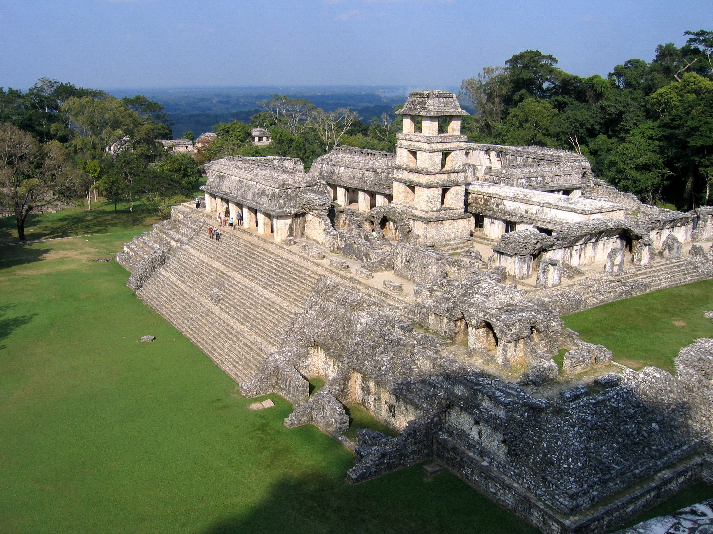

Élőhelyük
A maja civilizáció közép-amerikai prehispán civilizáció, amelyet a maja népek fejlesztettek ki és a Kolumbusz előtti Amerika legfejlettebb kultúrája volt, elsősorban a mai Mexikó délkeleti részén, Guatemala, Belize, valamint Honduras és El Salvador nyugati területein alakult ki.
Élőhelyük gazdag természeti erőforrásokban, de egyben kihívást jelentő környezet is volt, ami fejlett mezőgazdasági, vízgazdálkodási és építészeti megoldásokat igényelt.
Történelme
A maja civilizáció történetét három fő időszakra osztják:
- preklasszikus,
- klasszikus
- posztklasszikus kor
Ezeket a fő időszakokat kisebb korszakokra osztják, amelyeket azonban a mai tudósok a maja kronológia önkényes felosztásának tekintenek.
A spanyolokkal való kapcsolat és a hódítás időszaka (1511-1697)
1511-ben 13 spanyol hajótörött szállt partra a Yucatánon, ahol akkoriban kb. 16 független fejedelemség (kucskabal) létezett. Amikor Hernán Cortés konkvisztádor 1519-ben a Yucatánba érkezett, közülük csak ketten éltek már.
Az egyik túlélő, Gerónimo de Aguilar Cortést fordítóként segítette. A másik túlélő, Gonzalo Guerrero továbbra is a majákkal akart élni, és később velük harcolt a spanyolok ellen.Matematika
Az írásrendszerrel ellentétben rendkívül egyszerűen megfejthető a maják számrendszere. A számokat függőlegesen, alulról felfelé írták úgy, hogy a legalacsonyabb értékű szám volt alul, a legmagasabb pedig legfelül.
A számok leírásához pontot és vonalat használtak. A nullát egy kagylóval ábrázolták, egy pont az egyet jelentette, egy vonal az ötöt (például a 13 az 2 vonalból és 3 pontból, a 19 az 3 vonalból és 4 pontból állt).
Technika
A maják a csillagászatban és a matematikában olyan magas szinten álltak, amilyenre az európai civilizációk csak később érkeztek el. Tanulmányozták az égitestek mozgását, ismerték a napéjegyenlőséget és pontos naptárakat készítettek.
A tudományos felismeréseket azonban a nép életében kevésbé hasznosították. Például ismerték a kereket, de csak gyerekjátékoknál használták, szállítási célokra nem. A nép nagy részének életfeltételei primitívek voltak. Kőkorszaki eszközökkel szántottak, az eke és az igavonó állat fogalma ismeretlen volt.
Mégis létezett a luxusjavak távolsági kereskedelme és a hétköznapi élet fejletlen technikája csodálatos iparművészettel párosult.